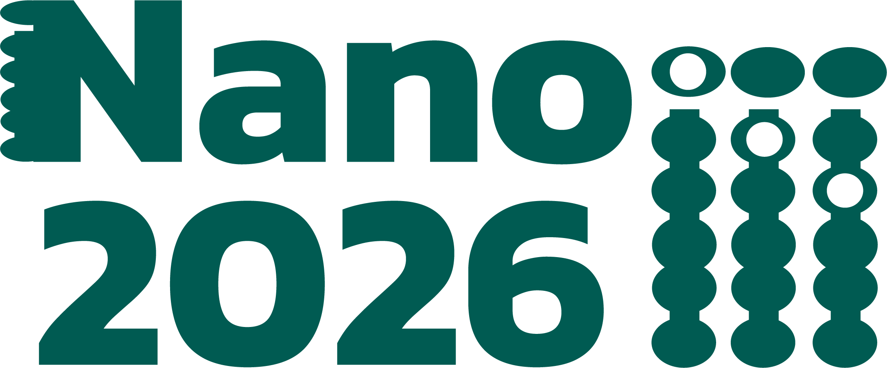
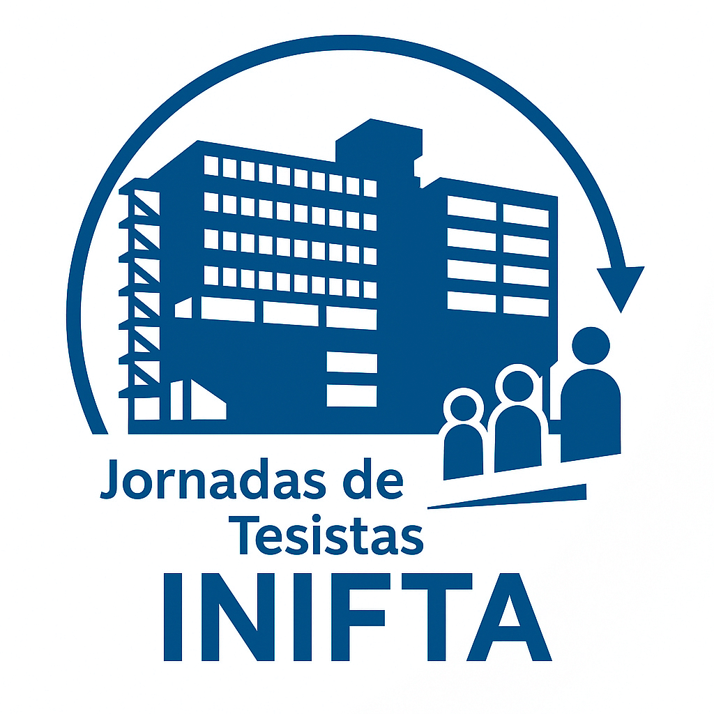
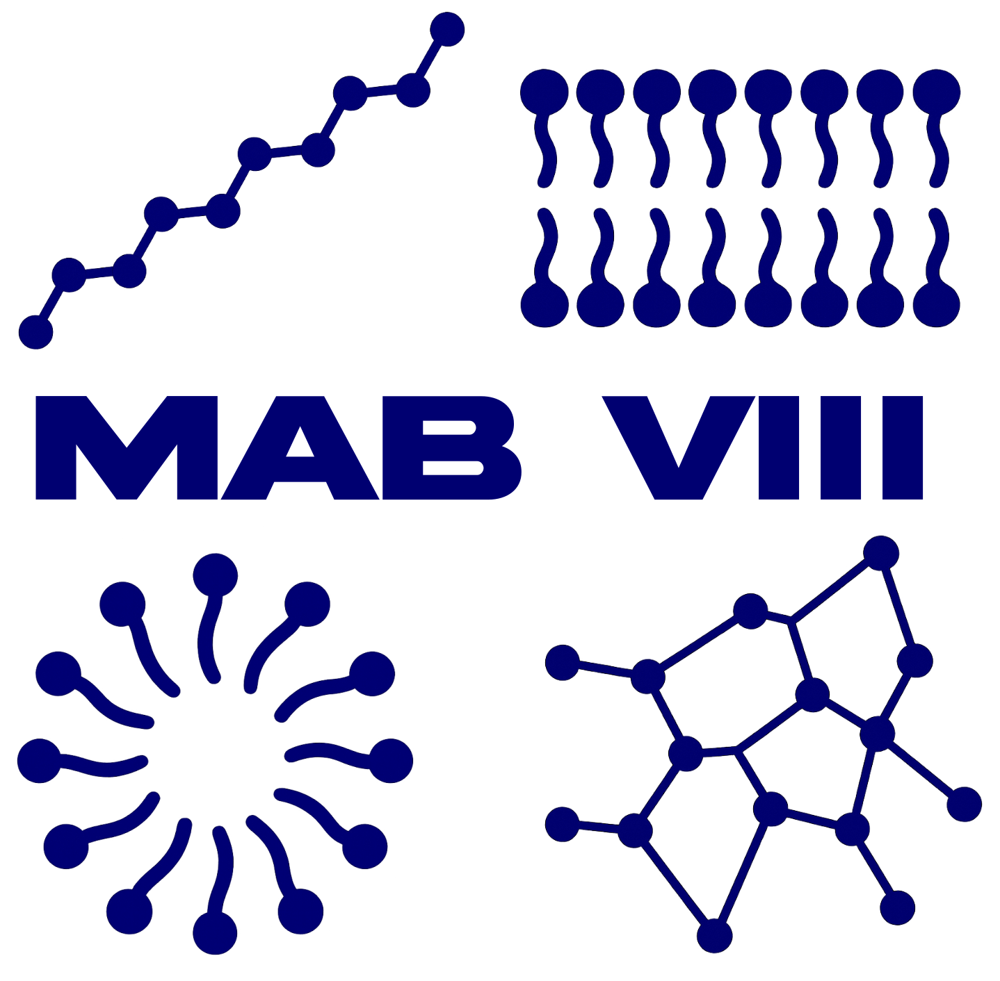

Molecular Theory of protein adsorption on silica surfaces
School on Biological Physics and Biomolecular Simulations in the Machine Learning Era, São Paulo, Brazil — Apr 2025
Talks and posters

Abstract book ↗XXIV Encuentro de Superficies y Materiales Nanoestructurados (Nano 2026)
Dinámica de transporte de gas en medios acuosos confinados: modelado y evaluación electroquímica de capas delgadas de ZIF-8

Abstract book ↗XVII Jornadas de Tesistas del INIFTA
Adsorción de péptidos y proteínas en nanopartículas de sílica
Nanogeles termo-responsivos como plataformas para la absorción de doxorrubicina

Abstract book ↗VIII Encuentro Argentino de Materia Blanda (MAB VIII)
Exploring the role of nanoparticle size in protein adsorption onto silica surfaces
Role of Amino Acid Sequence in the Adsorption of Silica-Binding Peptides
Impact of Network Functionalization on the Surface Properties of Hydrogel Systems
Molecular Theory of protein adsorption on silica surfaces
School on Biological Physics and Biomolecular Simulations in the Machine Learning Era, São Paulo, Brazil — Apr 2025
Modelling protein adsorption on silica nanoparticles by means of Molecular Theory
II Brazilian Workshop on Soft Matter, São Paulo, Brazil — Apr 2025
Theoretical Analysis of Molecular Coatings to Prevent Protein Adsorption on Silica Nanoparticles
LII Annual Meeting of the Argentine Biophysics Society (SAB2024), Bahía Blanca, Argentina — Nov 2024
The Role of Silica-Binding Peptides in Enhancing GFP Adsorption on Silica-like Surface Models: a Thermodynamic Study
LII Annual Meeting of the Argentine Biophysics Society (SAB2024), Bahía Blanca, Argentina — Nov 2024
Negatively charged protein adsorption on silica surface by Molecular Theory simulations
#LatinXChem Conference 2024, online — Oct 2024
Protein adsorption mediated by silica binding peptide on silica-like surface model via thermodynamic simulations
#LatinXChem Conference 2024, online — Oct 2024
Characterization of silica nanoparticles in biological media by X-ray Photon Correlation Spectroscopy (XPCS)
IV Argentine Congress of Neutron Techniques (TN2023), Buenos Aires, Argentina — Nov 2023
Adsorption of peptides on SiO₂ surfaces
V Young Bionanoscientists Meeting (JoBioN2023), Buenos Aires, Argentina — Nov 2023
Parametrization of non-specific interactions for protein adsorption on SiO₂ surface
#LatinXChem Twitter Conference 2023, online — Oct 2023
Using Polyamine Concentration to Trigger Drug Release from Polymer Hydrogel Films
Symposium “Molecular Modeling in Biophysics”, XLVIII Annual Meeting of the Argentinian Biophysics Society, San Luis, Argentina — Nov 2019
Separation and Localization of Proteins in pH-Responsive Gels: Computer Simulations
IFLySiB, School of Exact Sciences, UNLP–CONICET, La Plata, Argentina — Jun 2018
Adsorption and Protonation of Peptides and Proteins in pH-Responsive Gels: Computer Simulations
INQUIMAE, School of Exact and Natural Sciences, Universidad de Buenos Aires, Buenos Aires, Argentina — Jun 2017
Protonation of Peptides and Proteins in pH-Responsive Gels: Computer Simulations
Constituyentes Atomic Center, National Atomic Energy Commission (CNEA), Buenos Aires, Argentina — Oct 2016
Role of Acid-Base Equilibrium in the Adsorption of Proteins in pH-Responsive Hydrogels
Department of Chemistry, School of Exact Sciences, Universidad Nacional de La Plata, La Plata, Argentina — May 2016
Molecular Theory: Introduction and Examples
School of Exact and Natural Sciences, Universidad Nacional de Cuyo, Mendoza, Argentina — Apr 2016
Protein Adsorption on Stimuli-Responsive Hydrogels
100th Annual Meeting of the Argentinian Physics Society, Merlo, San Luis, Argentina — Sep 2015
Molecular Modeling of Biomolecule Adsorption on Poly(Acrylic Acid) Hydrogels
School of Exact and Natural Sciences, Universidad Nacional de Cuyo, Mendoza, Argentina — Sep 2015
The Physical Chemistry of Peptide and Protein Adsorption on pH-Responsive Hydrogels
Universidad Favaloro, Buenos Aires, Argentina — Jun 2015
The Physical Chemistry of pH-Responsive Hydrogels
Department of Organic Chemistry, School of Chemistry, Universidad Nacional de Córdoba, Córdoba, Argentina — Dec 2014
Stimuli-Responsive Hydrogels
Instituto de Matemática Aplicada San Luis (IMASL), San Luis, Argentina — Dec 2014